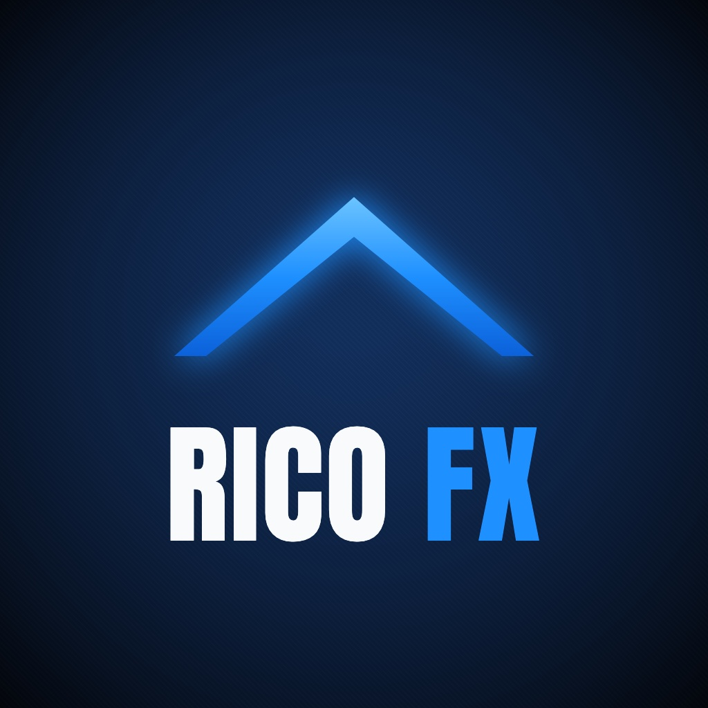

RICO Publisher
RICO Publisher to prywatne narzędzie na komputer, z którego korzysta wyłącznie twórca konta TikTok RICO FX (@odzera_do_tradera). Narzędzie nie jest udostępniane innym osobom.
Jak działa
- Twórca przygotowuje krótkie filmy edukacyjne o rynkach finansowych we własnych narzędziach do montażu.
- Każdy gotowy film trafia do twórcy do sprawdzenia. Nic nie zostaje opublikowane bez jego wyraźnej akceptacji.
- Po akceptacji narzędzie wysyła film na własne konto TikTok twórcy przez TikTok Content Posting API: jako wersję roboczą w skrzynce TikToka albo jako bezpośrednią publikację z ustawieniami prywatności wybranymi przez twórcę.
Narzędzie loguje się przez TikTok Login Kit i ma dostęp tylko do konta twórcy. Nie odczytuje, nie zbiera i nie publikuje niczego w imieniu innych użytkowników TikToka.
Treści mają charakter edukacyjny i nie są poradą inwestycyjną. Handel wiąże się z ryzykiem utraty kapitału.
Ostatnia aktualizacja: 3 listopada 2026 · Kontakt: Instagram @jakub_rico_rapel